SCINTILLA · T5 · THE TREE, CLEAN AND COILED · THE CONE, LABELLED
2 Oct 2026 · branch hub/t5-tree-clean-coil-20261002 · nothing deployed, no table changed
What changed, in pictures first
Alan, 2 Oct: the canvas is good but a little boxy
; where are all these arrows? I see a bunch of question marks. I see a lot of things without children
; two versions with a toggle; a little 3D per section, not the whole market; the tables in order, green to red
, and coiled like a snake… two snakes, mirrored
; and on the comps rings, more labels on what each ring is
. Every one of those is below, before and after.
Before → after · the zoom-out
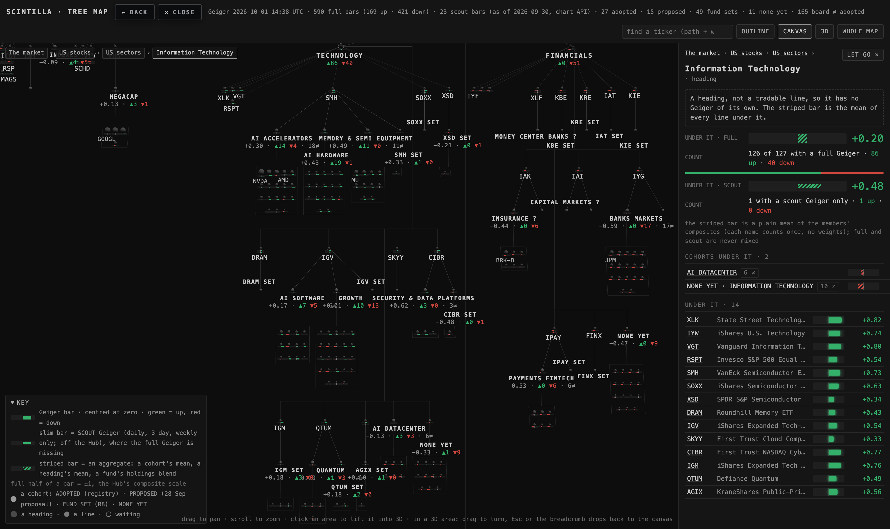
BEFORE (1 Oct, T4): boxes of tiny balls under every cohort, ▲86 ▼40 under the headings (the "arrows"), MONEY CENTER BANKS ? and CAPITAL MARKETS ? (the "question marks"), and SOXX SET, KRE SET, KBE SET hanging with nothing under them (the "things without children").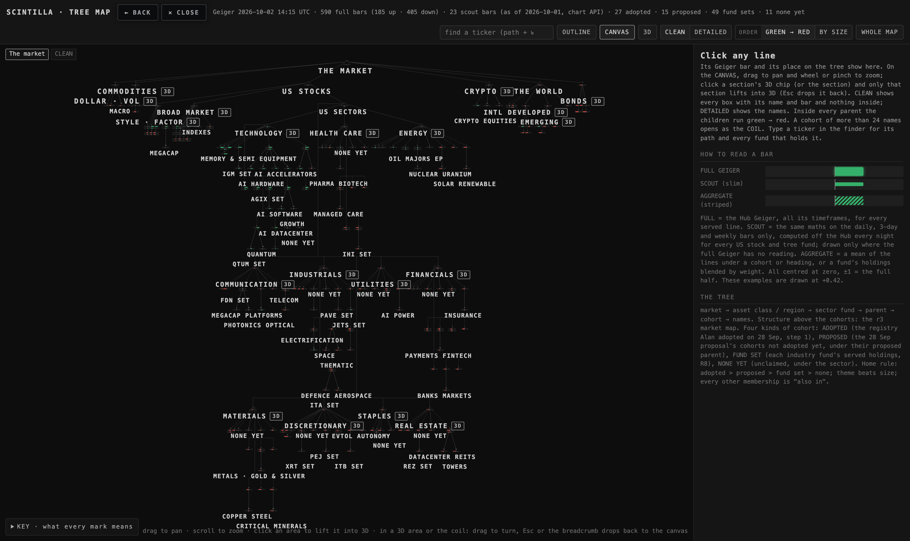
AFTER, CLEAN (the default now): the same tree with every heading, cohort and fund that has a Geiger bar, and nothing drawn inside the boxes. 514 nodes are folded away — every name, every fund set with no names at home, every waiting line — and each parent says ＋N more when you zoom in. Every section carries a 3D chip. No "?" anywhere; the counts read 91 up · 35 down in words.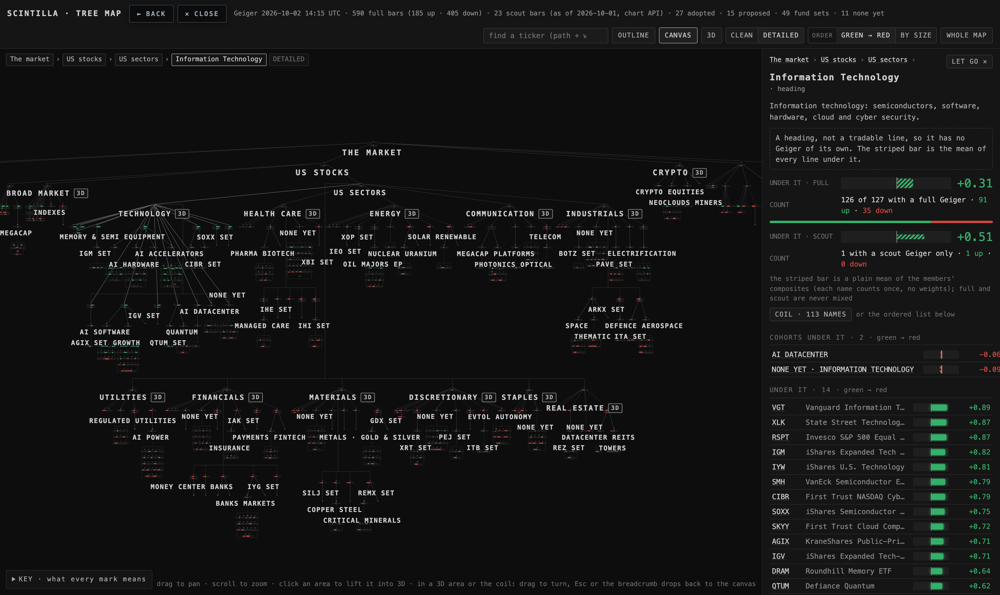
AFTER, DETAILED (one click, remembered per viewer): the whole tree with the names, zoomed into Technology. The small line under a cohort now says +0.49 · 18 up · 2 down; a proposed cohort says proposed, not adopted instead of a "?"; a fund set with nothing under it says no names at home here.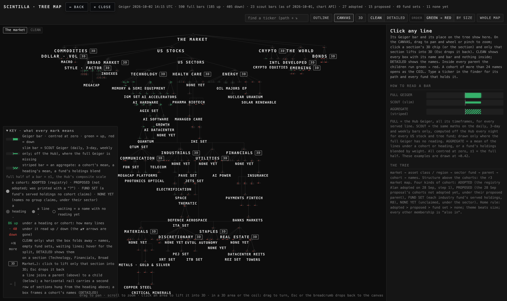
The KEY, opened: a row for every mark on the canvas — the bar, the slim bar, the striped bar, the four kinds of cohort (and what "NONE YET" means), the heading / line / waiting balls, the "86 up · 40 down" line, "＋N more", the 3D chip, and what a line, a rail and a box are.Before → after · 3D per section
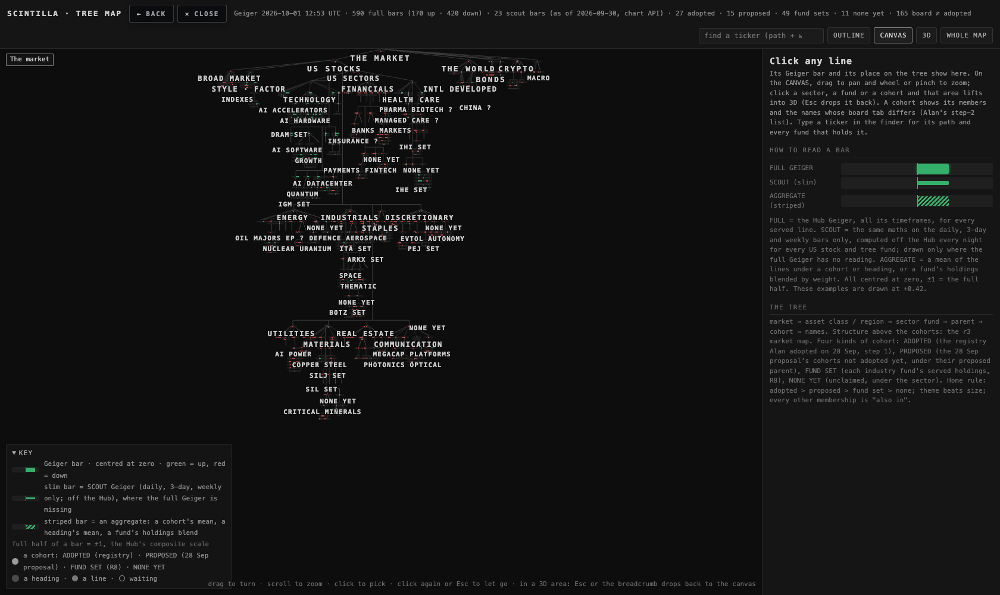
BEFORE: the whole market; to get a 3D you clicked a heading and hoped. The header's 3D button lifts the entire market, which Alan calledchaos.
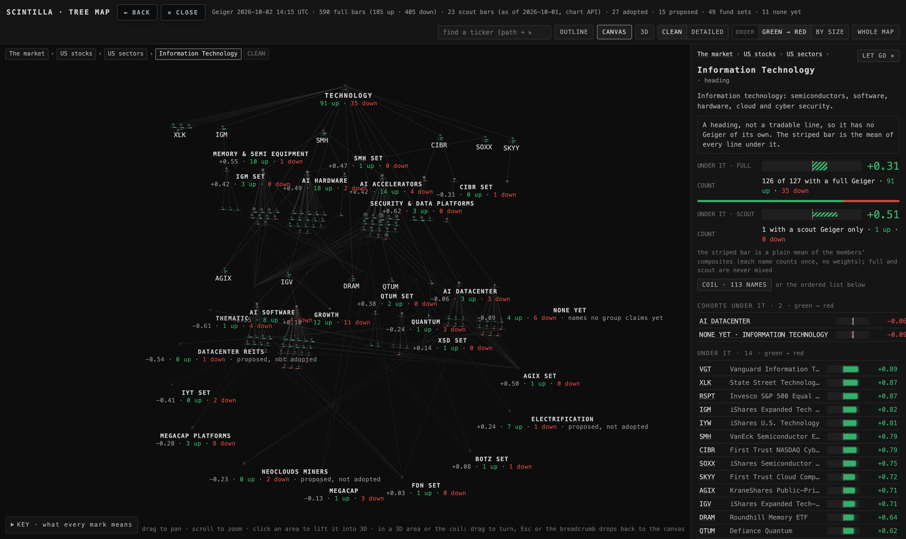
AFTER: a real mouse click on Technology's 3D chip lifted only Technology — 142 nodes, 112 names, its 16 neighbours — with the words under every cohort. Esc or ← back to the canvas drops it back to the same spot and zoom. The header's 3D button is still there for whoever wants the whole market.Before → after · the order and the coil
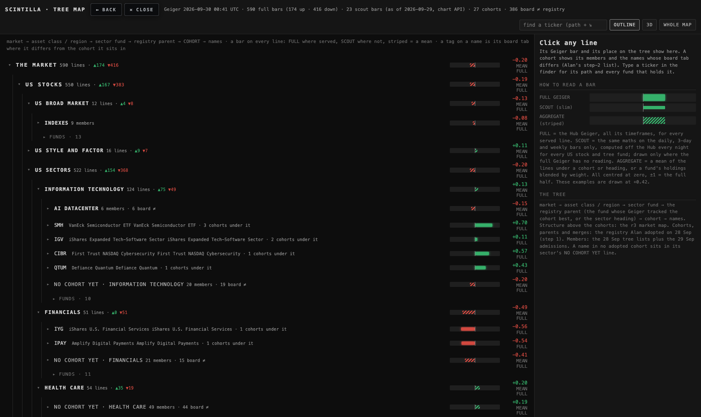
BEFORE: the outline and the card tables in the registry's order — adopted first, then by size —a little shit.
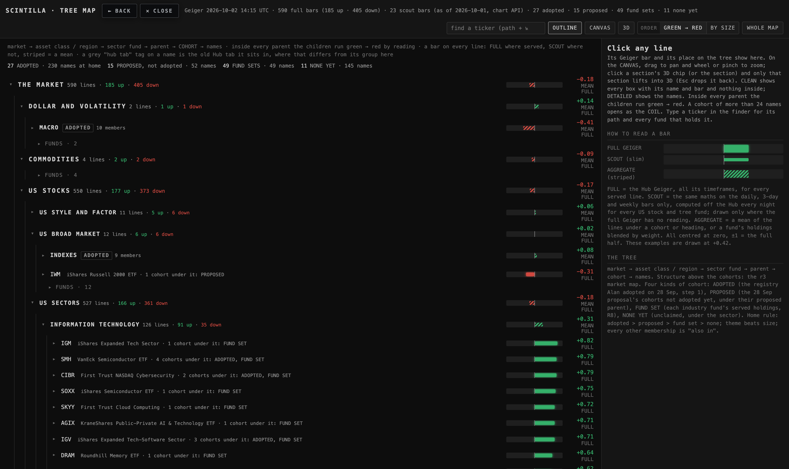
AFTER: inside every parent the children run green → red by their reading, ties by name, no reading last — the outline, the canvas, the card tables and the 3D ring alike. The sectors on the day of the shot: Technology +0.31 first, Real Estate −0.67 last. BY SIZE in the header brings the old order back.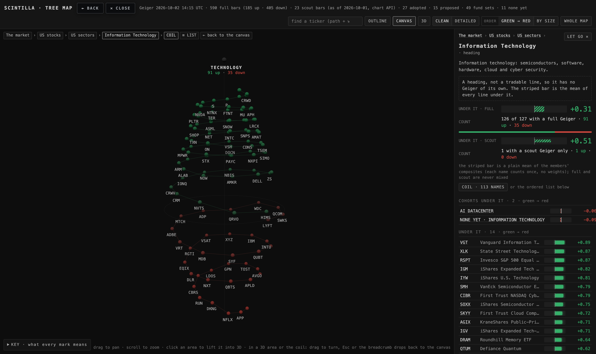
THE COIL, Technology's 113 names: the greens coil upward, the highest reading (OKTA) at the top tip; the base ring near zero is flat; the reds coil downward, mirrored, the most negative (FIS) at the bottom tip. Each bead is a name, its colour is its reading, its ticker is printed. The crumbs offer ≡ LIST: the same names as a plain ordered list on the card.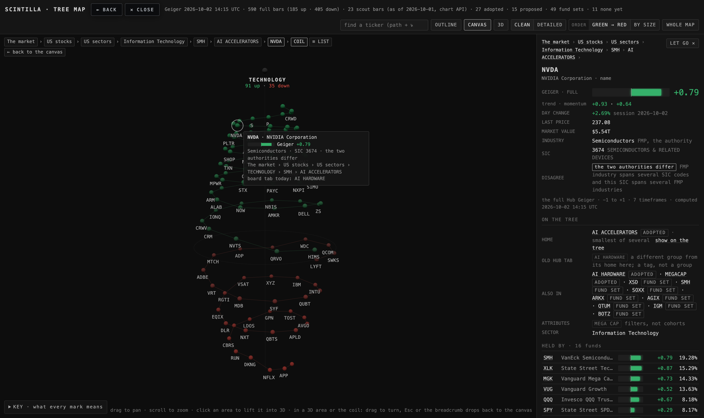
Hover a bead: its bar, its reading, its industry and SIC, its path on the tree. Click it: its card — Geiger, day change, INDUSTRY (FMP, the authority), SIC (the tag), the DISAGREE flag where the two differ, and show on the tree.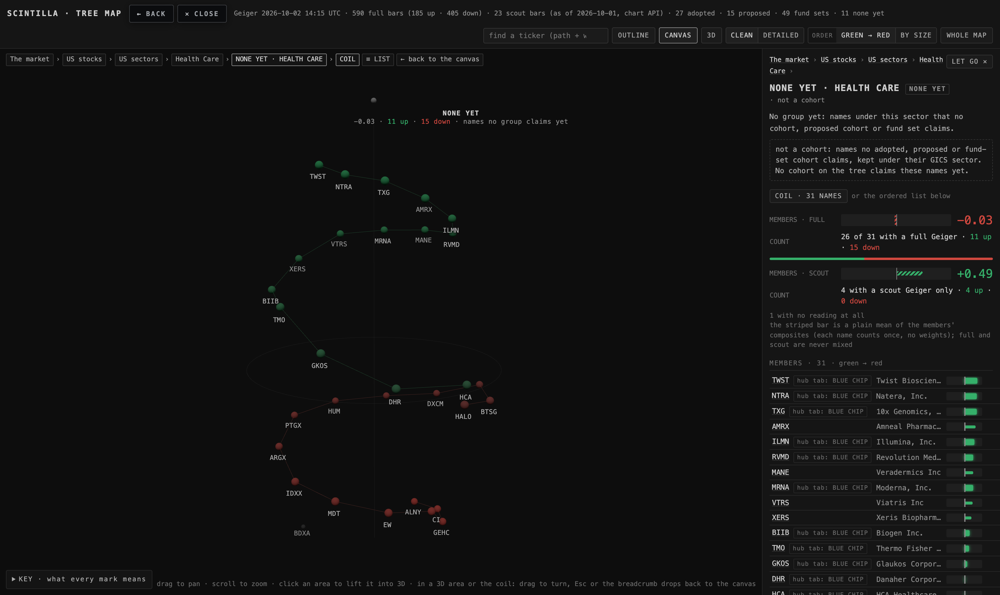
The one long cohort on the tree, NONE YET · HEALTH CARE (31 names): a cohort of more than 24 names opens into the coil by itself when you click it on the canvas. 15 up, 15 down, one with no reading (BDXA, grey, under the base).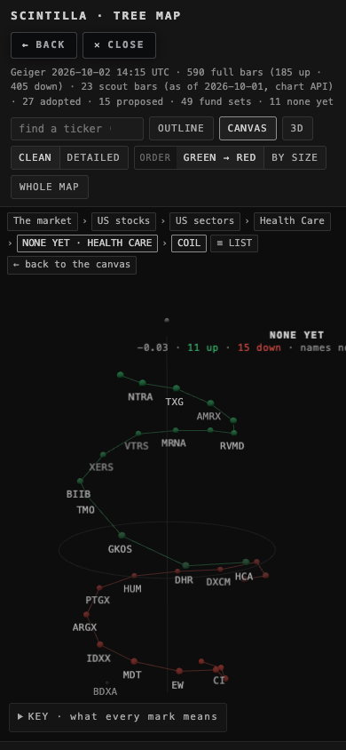
The same coil on a phone (390 wide), then its card below.Before → after · the agreement cone
 AFTER: every ring says what it is where it is drawn (4 SOURCES AGREE … 1 SOURCE NAMES IT, with "all four: peer list, related, same industry, shared fund" under the top one); the four sources are named once at the top; the dashed ring says THE SIZE BAND — ÷10 … ×10 of LRCX's market value; the bright dots say THE 10 KEPT. Above the picture, four plain lines: what goes in (76 candidates), what each ring removes (33 in another industry, 20 outside the band, 11 beyond the nearest ten), what is left (the ten, with their votes), and why. The same four lines head the ladder page. Before, the rings said "1 VOTE … 4 VOTES" and the dashed ring said "THE KEPT BAND", and nothing said what a vote was.
AFTER: every ring says what it is where it is drawn (4 SOURCES AGREE … 1 SOURCE NAMES IT, with "all four: peer list, related, same industry, shared fund" under the top one); the four sources are named once at the top; the dashed ring says THE SIZE BAND — ÷10 … ×10 of LRCX's market value; the bright dots say THE 10 KEPT. Above the picture, four plain lines: what goes in (76 candidates), what each ring removes (33 in another industry, 20 outside the band, 11 beyond the nearest ten), what is left (the ten, with their votes), and why. The same four lines head the ladder page. Before, the rings said "1 VOTE … 4 VOTES" and the dashed ring said "THE KEPT BAND", and nothing said what a vote was.The seven things, in words
- CLEAN | DETAILED. Two pictures of the one tree, two buttons in the header. CLEAN lays out only what carries a reading: every heading, and every cohort or fund that has a bar of its own or an aggregate bar. Names are never drawn, so there are no boxes; a fund set whose holdings all live elsewhere (no bar) and a waiting fund (no reading) are folded too. What a box folds away sits on it as ＋N more; hover for the split (names, empty sets, funds with no reading, waiting). DETAILED is the whole tree. CLEAN is the default; the choice is remembered on this browser. The tree morphs between the two.
- Marks that explain themselves. The "?" after a proposed cohort is gone; its line says proposed, not adopted. The ▲▼ counts are words: 86 up · 40 down. A fund set with nothing under it says no names at home here; a NONE YET box says names no group claims yet; a hollow ball's hover says waiting: no reading yet. The KEY has a row for every glyph, including what a line, a rail and a box are. The card's "→" became "at home in".
- Order. One sort in the layout module, shared by the canvas, the whole-market 3D and the tests: inside every parent, children run green → red by reading, the highest first, ties by name, no reading last. The outline, the card tables and the neighbour ring inside a 3D area use the same rule. BY SIZE restores the old order (adopted first, then by market value; sector funds before the others).
- The coil. A name's height is its reading (×320), so beads near zero lie flat round the base ring and the strong ones climb; its angle grows with its rank from the base, so the greens wind up to the top tip and the reds wind down, mirrored, to the bottom tip; the radius narrows toward the tips. Colour is the reading (stronger = brighter). Hover = the bar and the path; click = the card. A cohort of more than 24 names opens into the coil when clicked on the canvas; any parent offers COIL · N NAMES on its card; ≡ LIST in the crumbs shows the plain ordered list.
- 3D per section. Every heading with no sub-headings (Technology, Financials, Broad Market, Style · Factor, the world regions, bonds, commodities, crypto, dollar · vol) carries a 3D chip on the canvas at every zoom. Clicking it, or the section, lifts only that section in full detail. Esc or the breadcrumb drops back. The header's 3D button (the whole market) stays.
- Names of things. Every heading has one plain sentence, on its card and on hover — STYLE · FACTOR =
funds that slice the market by style — growth, value, momentum, quality, size — instead of by industry
. The cohort card shows the standard's group first and its members in order; the old Hub tab is a small grey hub tab: … on a member, a tag, not a group; the "BOARD ≠ REGISTRY" section and the header's "165 board ≠ adopted" are gone. Every name's card shows INDUSTRY (FMP, the authority), SIC (the tag) and the DISAGREE flag with the standard's note. - The agreement cone. As pictured above. The generator is build-page.mjs; the standard page, the ladder and the cone were rebuilt from it and reshot at 1680 and 390.
Where each number comes from
- Geiger bars — the chart API, live: /geiger (the full Hub Geiger, 590 served lines) and /v1/scout-geiger (the three-rung scout, nightly) where the full one is missing. Nothing is stored in the page; the stamp says the time.
- The order — a node's own reading, else its aggregate (a cohort's or heading's mean, a fund's holdings blend), else none. The same value colours and places the coil's beads.
- ＋N more — counted at layout time: every node CLEAN leaves out is added to its nearest kept ancestor. 514 in CLEAN on 2 Oct: 476 names, 32 fund sets or proposed cohorts with no names at home, 6 funds with no reading; 99 parents carry a count.
- INDUSTRY and SIC —
industry-20261002.json, built bybuild-industry.mjsfrom the standard lane's committed 1 Oct snapshots: FMP profile (453 of 476 names have an industry), the Massive reference probe (SIC for 93 names), and the standard's 67 disagreement notes. - The cone's counts —
derived-20261001.json, the standard's LRCX comp set: 76 candidates, 74 served, 41 in the industry, 21 in the band, 10 kept.
Where the coil reads worse than the list
- Near the base. Readings between −0.1 and +0.1 sit almost on one ring, so beads crowd and a few tickers hide behind each other (NVTS, ADP, QRVO in the Technology coil). The list never hides a name.
- Finding the tenth. The eye reads the coil around a spiral, not down a column: "which is the tenth strongest" is a list question. The coil answers the shape question — how many greens against reds, how steep the tips, whether the base is thick or thin.
- Exact values. The coil carries no bars on the beads (they would cover each other); the bar is on hover and on the card. The list shows every bar at once.
- Small screens. At 390 wide the coil is readable but the tickers touch; the list is the better view there.
Proof
Headless Chrome (SwiftShader, never a window on Alan's screen), the page served from this branch, the chart API answering live.
Tests:
proof-t5.mjs drove 42 steps at 1680×1000 and 1400×900 at device scale 2 and 11 steps at 390×844, and wrote shots/t5-*.png (28 pictures) and shots/t5-proof.json. Facts the tests check from it: no page error at any size; CLEAN hides 514 nodes and draws no name, DETAILED hides none; 19 sections carry a chip; a real click on Technology's chip lifts Technology alone (112 names) and back restores the pose with rotation locked; the coil orders 113 Technology names (OKTA at the top tip, FIS at the bottom) and 31 Health Care names (TWST, ALNY); the sectors run green → red on the canvas and the outline opens with the strongest; BY SIZE restores the old order; every printed label sits on its node (0 px sideways, within 60 px vertically, none outside the canvas). Pictures examined by eye: the ones above, plus 1400 and 390 copies of each.Tests:
node --test tests/ — 1,656 tests, 1,649 pass, 5 fail. The five are the five that already fail on production (Indicator Lab's newest page, "every place this surface prints an age", saved review charts, readiness, xfeed-publish); none is new; tests/tree-clean-coil.test.mjs adds eight tests for the seven items and the walk; one T1 test was updated to the new wording (the board difference is a grey tag, not a section).What could be wrong
- The order moves things. With green → red inside every parent, Technology is first today and may be last tomorrow; the canvas re-flows each load. BY SIZE is there for a steady picture.
- SIC on only 93 names. The brief says public.ticker_industry now holds the SIC for 426 of 590. This Mac holds no key, and reading the public key off the Hub page to query the table was refused on 2 Oct, so the page shows the 93 the 1 Oct probe reached and says "not on this Mac yet" on the rest. The builder reads only committed snapshots; a row export dropped next to it is a one-line change.
- CLEAN's rule is simple. "Has a bar" keeps a fund set with one name at home and drops a fund set with none; that is right by the rule but can look uneven. A box that folds 31 names says so on hover and in DETAILED.
- The coil's constants (height ×320, eleven beads per turn, taper 0.72) were chosen by eye at 1680; a cohort with 200 names would need more turns.
- The sector words are mine, one sentence each, written plainly; Alan may want other words for any of them.
What was not done
- Nothing deployed, pushed, or written to a table; index.html, the registry, tickers.cohort, prototypes/indicator-lab, lab.html and INDICATOR_LAB untouched.
- The 426-row SIC table was not read (above).
- Items 1–6 landed in one page commit rather than six: they touch the same four functions (the layout, the labels, the card, the outline), and splitting them would have meant six broken intermediate states. The order rule and the cone have their own commits.
- No whole-market CLEAN in the header 3D beyond what the toggle gives (it applies there too, but no 3D-specific work was done).
- The scnav placer rewrote seven unrelated pages when run; those were put back untouched.
Decisions for Alan
1 · Coil first, or list first, for a long parent? Built coil-first with the list one click away, as the brief asked. Recommendation: keep coil-first for cohorts (the shape is the point) and list-first for a whole sector's names (113 is a lot of beads); one line to change.
2 · Should BY SIZE stay in the header, or move into the KEY? Recommendation: keep it in the header for a week; if it is never pressed, move it.
3 · The 426 SIC codes. The coordinator can drop a row export of public.ticker_industry next to the builder (or the page can read the table on the Hub, where the public key already lives). Recommendation: the export, so the page stays static and the number is checked in.